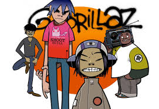

GORILLAZ
Nacimiento: 29 de agosto de 1958, Gary, Indiana, Estados Unidos
Michael Joseph Jackson nació el 29 de agosto de 1958.
Gorillaz es una banda virtual británica creada en 1998 por Damon Albarn y Jamie Hewlett.
La banda está compuesta por cuatro miembros ficticios: 2-D, Noodle, Murdoc Niccals y Russel Hobbs.
La mayoría de sus canciones junto con todo su universo ficticio, se presentan a través de vídeos musicales animados, de animación tradicional y animación por computadora, entrevistas y pequeños cortos animados.
En la realidad, Albarn es el único miembro permanente de la banda.
El productor y ejecutivo Remi Kabaka Jr. empezaría a colaborar con el grupo en 2016 después de proveer por varios años la voz de Russel Hobbs y sería nombrado miembro oficial junto a Albarn y Hewlett en 2019 en el documental de Gorillaz, Gorillaz: Reject False Icons.1
MUSICA FAVIROTA
Yo
Yo, yo
'Cause I'm this, Gorillaz from the mist lyricist and my thoughts be twisted
I spit the wickedest rhymes from a time that's never existed
My futuristic linguistics turn fools into statistics
I'm a lyrical misfit with the sadistic characteristics
I perform murderous acts on my tracks with a single breath
And if a boy wanna test, then I be stampin' upon his chest
Done makin' a mess, not a man could conceive the weed I'm consumin'
And I transform from my cartoon pseudonym, turn to a human
I spit words from my mouth that be turnin' you inside out
And I tie knots in intestines just like I'm a boy scout
That's workin' 'em out, now rearrangin' your whole skeletal structure
Then I find some nine-inch nails to perform some acupuncture
When I punch ya, I rupture one of your rib cage in a rage
And I turn you into a cartoon toon and erase the page
I take you back to the Stone Age with Barney and Fred Flinstone
Got Dino to take a machinos and then forage in a live home
I'ma take off like a jetpack with the get back, rather step back
I'ma make the crowd react and nod they heads until they neck snap
Life conflict rap while riding a skateboard and doin' a tic-tac
And leave your head in a spin like servin' on turn table skid mats
I'm a concrete lion, big cat, these are real talk, not big-chat
Did ya get that 'cause I ain't no small timer, I rhyme on big tracks
Now fell the vise I create, this heavyweight, I'm a rap to detonate
And demonstrate how I generate lyrics that supernaturally levitate
To the top, my lyrics are skeletons, accelerate and leave you panickin'
Take the ground from beneath your feet, leave you Skywalk-in' like Anakin
I'm sharper than the tips of Zulu spears and Olympic javelins
My style is totally buck wild and most definitely happenin'
To your brains I be tappin' in, to computers I be hackin' in
To me, I be out of this world like aliens who were time travelin'
I'm babblin' in the Fists of Fury technique when I speak
Forget Karate Kid and these wooden blocks, I chop from concrete
Concrete, concrete, concrete, wha-wha-wha-wha-wha-wha
I've been stoned ever since the days of creation, I've been red
I'm a mad dred, causin' so much havoc in Russel's head
My lyricism is just like an aneurysm inside his brain
He plays the beat in a trance, and he's never feeling no pain
I could never be a racist because I posess so many faces
I'm one of those beat-up bad wit' bags and a pair of braces
With lines longer than laces, I'm gracin' you with my presence
I pulverize and bamboozle, shake numb skulls like a boodle
I smashed the top of your head with a guitar I borrowed from Noodle
I'm as animated as Japanese animes causin' calamities
Some serious savoury from my roarous rhymes of reality
At the speed of sound, I'm wanderin' around, the clown done tried to defeat us
Without tenacities or audacity, don't you ever thought you could beat us
Beat us, beat us, beat us, beat us, beat us, beat us, beat us, beat us
Beat us, beat us, beat us, beat us, beat us, beat us, beat us, beat us
Beat us, beat us, beat us, beat us, beat us, beat us, beat us, beat us